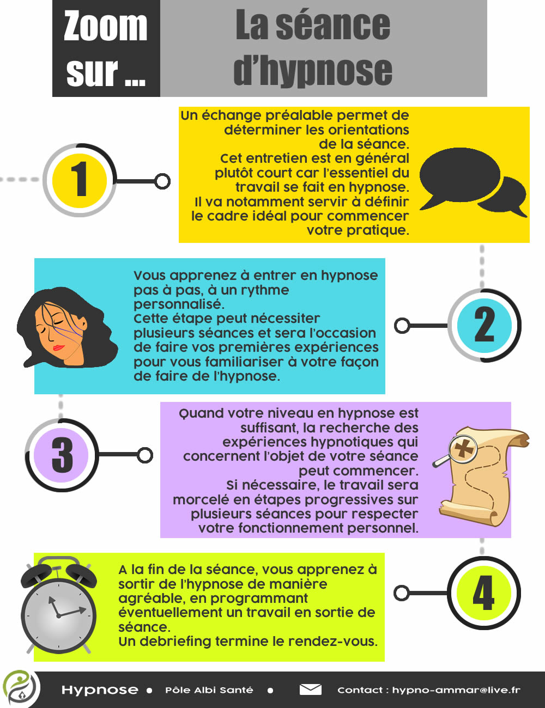

Tout au long de notre vie, on accumule énormément d’apprentissages en tout genre qui nous servent à répondre aux exigences de la vie.
Tant que ces apprentissages vont dans notre sens et nous rendent service, on les remarque à peine. Mais dès que l’un d’entre eux devient gênant et qu’on décide de le corriger par la volonté ou à force d’explications, on se rend compte que ça ne marche pas tout le temps. C’est là qu’on se dit : “C’est plus fort que moi !”
En hypnose, on pense que pour produire certains changements ( comme changer une habitude, agir sur une émotion ou une pensée qui devient gênante, se libérer de certaines expériences du passé…), il nous faut parfois utiliser un état spécial qu’on appelle l’état d’hypnose.
Dans cet état, il est possible d’apprendre à laisser se produire certaines expériences qui vont pouvoir agir à un niveau plus profond et réussir à changer ce qui nous semblait inaccessible autrement.
Lors de séances d’hypnose, on apprend à se servir de l’hypnose (comme on apprendrait à jouer d’un instrument de musique). Aucun prérequis n’est nécessaire. Dès que le niveau est suffisant (pour certaines personnes , dès la 1ere séance), il est possible de commencer à solliciter les capacités hypnotiques pour atteindre les résultats souhaités.
Ce qui est vécu dans une expérience d’hypnose peut varier d’une personne à une autre : Alors que certaines personnes n’auront qu’une très vague expérience, d’autres seront embarquées dans une rêverie très riche au niveau émotionnel.
Plusieurs séances peuvent être nécessaires pour atteindre le niveau souhaité d’hypnose qui produira les effets escomptés. Important : Les séances d’hypnose ne se substituent à aucun traitement médical. Il convient de demander conseil à votre médecin ou votre psychiatre en cas de doute sur l’intérêt de la pratique de l’hypnose dans votre cas, en complément de votre thérapie. De même, l’hypnose ne correspond pas à un suivi psychologique. Les psychologues sont à même de vous fournir ce genre de soutien si besoin.